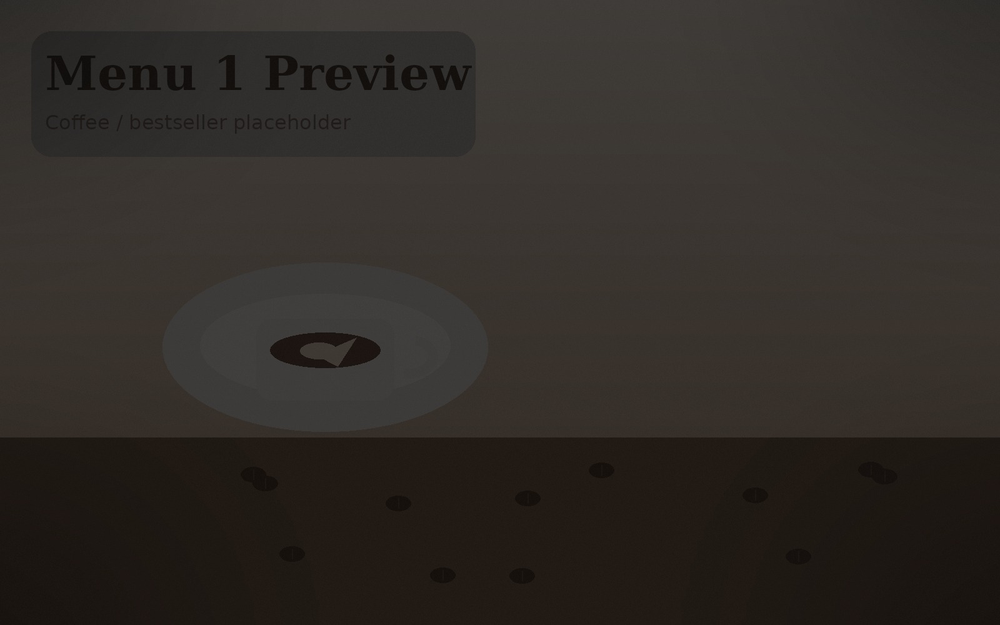
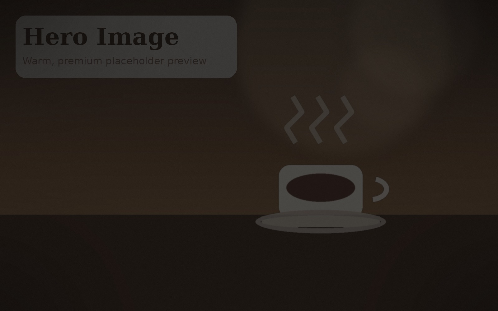
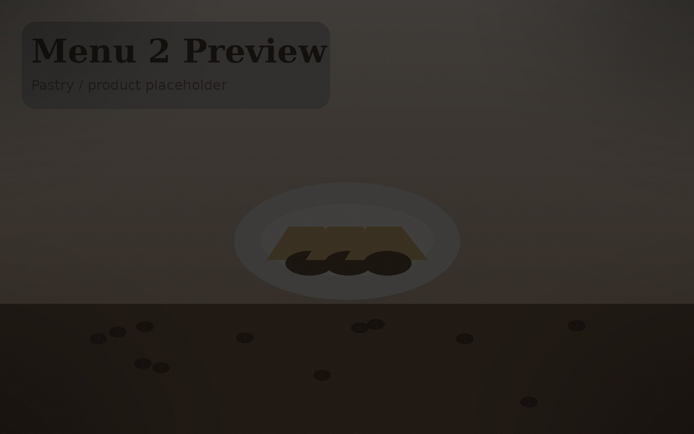
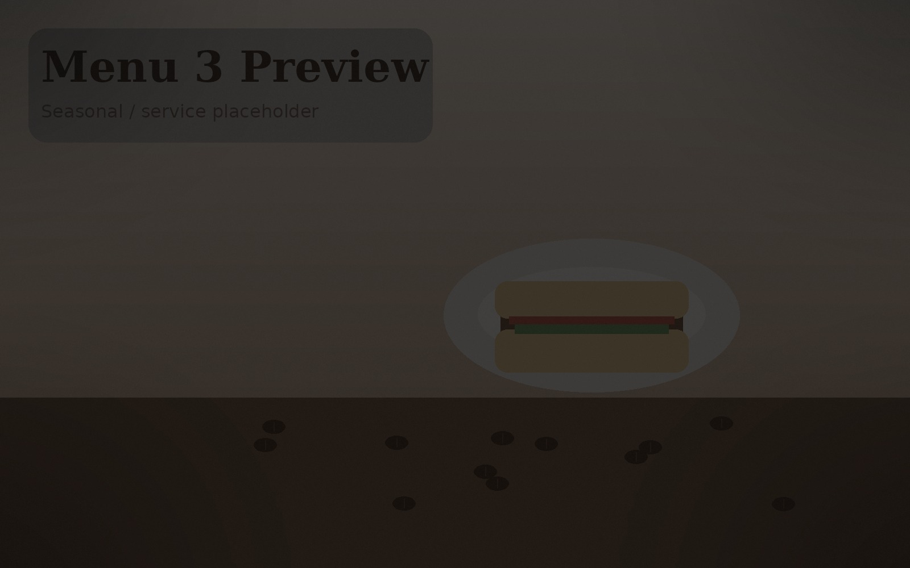

Café & Genuss
Kaffee, Desserts und kleine Genussmomente
Auf dem Auftritt von Nano stehen Kaffee, Süsses, Getränke und entspannte Besuche sichtbar im Vordergrund.
Das Nano Café & Bistro an der Allschwilerstrasse 49 verbindet entspanntes Café, süsse und herzhafte Genussmomente sowie Raum für kleinere Feiern und gesellige Anlässe in Basel – warm, unkompliziert und einladend.


Der Auftritt von Nano soll nicht nach Standard-Café wirken, sondern nach einem Ort, an dem man sich trifft, etwas geniesst und auch mit mehreren Personen zusammenkommen kann.
Genau deshalb liegt der Fokus hier nicht auf einer erfundenen Online-Speisekarte, sondern auf Atmosphäre, Eindruck, Erreichbarkeit und dem, was diesen Ort tatsächlich ausmacht.
Nano wirkt vielseitig: tagsüber entspannt, für süsse und kleine herzhafte Momente, und gleichzeitig als Ort, der auch für Gruppen und Anlässe interessant ist.

Auf dem Auftritt von Nano stehen Kaffee, Süsses, Getränke und entspannte Besuche sichtbar im Vordergrund.

Bilder und Highlights zeigen, dass Nano nicht nur Café ist, sondern auch Raum für gemeinsame Anlässe bietet.

Genau diese Stimmung soll die Website transportieren: kein Hochglanz-Theater, sondern echter Charakter.
Nano wirkt durch seine Bilder und Highlights wie ein Ort, an dem man nicht nur Kaffee trinken, sondern auch mit anderen zusammenkommen, feiern oder einen Anlass in angenehmer Atmosphäre verbringen kann.
Mehr zu AnlässenWer Nano besuchen möchte, soll die wichtigsten Informationen sofort finden: Adresse, Zeiten und direkter Kontakt – ohne langes Suchen.
Allschwilerstrasse 49, 4055 Basel

Für Nano ist ein klarer Kontaktweg sinnvoller als ein halbherziges Formular: anrufen, vorbeikommen oder direkt über Instagram einen Eindruck bekommen.
Allschwilerstrasse 49
4055 Basel